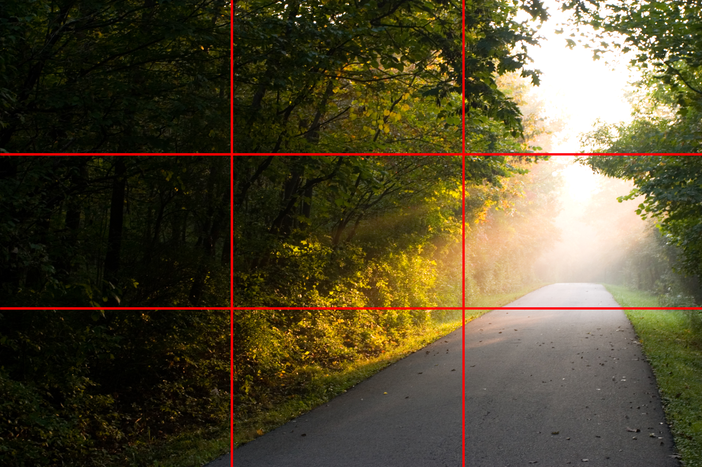
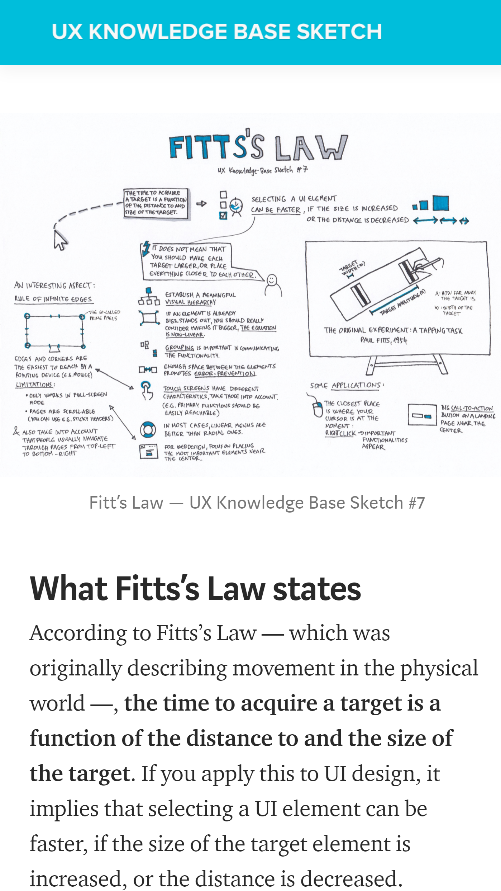

Rule of Thirds
Rule of Thirds
The rule of thirds is to mentally divide your image into 3 equal vertical sections, and three equal horizontal sections. Similar to a tic-tac-toe grid or a hashtag #. Then you want to position the important elements of your image along those lines, or at the points where they meet. This particualr image is from "Wikimedia Commons" which is a free media repository. For this example they have drawn the lines in red on the picture to make them plain to see. See how the focus of the image falls along those grid lines.
Fitt's Law
Fitts's Law
Fitt's law states that the time it takes to acquire a target is a function of the distance to and the size of the target. Or in other words, the closer you are to the target and the bigger it is the less time it takes to touch it. You can touch a tree you are standing next to quicker than you can the one across the street. You can also touch that tree quicker than you can a blade of grass on the sidewalk. Even if the distance between the two is the same. This image is a diagram showing that from the UX Knowledgebase.